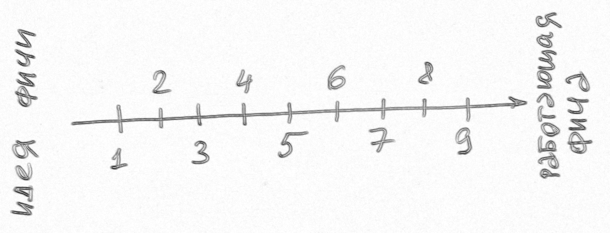

Часть 1. Краткое описание инженерных практик
Порядок описания: хронологически относительно пайплайна производства кода

1. Requirement review (ревью ТЗ)
Requirement review - ревью постановок (ТЗ). Написанные аналитикой постановки
совместно отсматриваются тремя сторонами:
- разработкой, с т.з. как это будет разрабатываться
- тестированием, с т.з. как это будет тестироваться
- аналитикой (аудит)
Цель: нахождение неточностей, недоговорённостей, неоднозначностей и
т.д., т.е. приведение постановок к максимально точному, полному и конкретному виду.
2. Design review
Design review - проектирование ПО. Коллективная работа, проводится ДО написания
кода.
Возможно в форме, аналогичной код-ревью: через пулл-реквесты с комментированием и аппрувами.
Для оформления ADR (Architecture Decision Record) хорошо подходят языки Markdown (документы с
форматированнием в plain-тексте) и PlantUML (UML и ER-диаграммы в plain-тексте).
Цель: обеспечить грамотное проектирование структуры БД и дизайна классов,
соответствие принятых проектных решений текущей архитектуре.
3. Парное программирование
Двое программистов одновременно работают над одной задачей за одним компьютером
Цели:
- ускорение работы
- повышение качества кода
- передача знаний
4. Работа с техническим долгом
Технический долг:
- код, не соответствующий командным критериям качества
- сознательно применённые некачественные технические решения ("костыли")
Для обеспечения возможности возврата техдолга он должен быть зафиксирован и измерен.
- WI на возврат техдолга
- пометки в коде (через TODO)
Цели:
- избежать или замедлить загнивание кода
- сохранить приемлемую скорость развития и сопровождения кода
- повысить удовлетворённость разработчиков
5. CI/CD (CI/CD/CD)
- CI (Continuous Integration) - автоматические сборка системы после всех изменений
кода, прогон
тестов и проверок статическими анализаторами
- CD (Continuous Delivery) - автоматическая доставка новых версий системы
конечным пользователям
- CD (Continuous Deployment) - автоматическая публикация новых
версий в тестовых и промышленых
средах
Цель: автоматизация пайплайна производства кода
6. Статический анализ кода
Статический анализ кода - автоматическая проверка кодовой базы специальными
анализаторами на
предмет наличия code smells, уязвимостей, потенциальных багов.
Примеры: SonarQube, сообщения в IDE при компиляции и сборке проекта, ESLint и другие
линтеры.
Цель: - указать на потенциальные проблемы в коде.
7. Автоматизированное тестирование
- модульные тесты (юнит-тесты) - разработка
- end2end-тесты - тестирование + аналитика
- интеграционные тесты - разработка + тестирование и аналитика
Цели:
- уменьшение количества багов
- повышение качества кода
8. Код-ревью
Код-ревью - изучение кода другими разработчиками
Цели:
- повышение качества кода
- контроль правильности проектных решений, соответствия этих решений текущей архитектуре
- передача знаний
- формирование коллективной ответственности
9. Владение кодом (code ownership)
Владение кодом - назначение ответственных разработчиков (овнера и дублёра) для каждого участка
кодовой базы.
Цели:
- повышение качества и скорости выполнения работ
- нивелирование bus-фактора